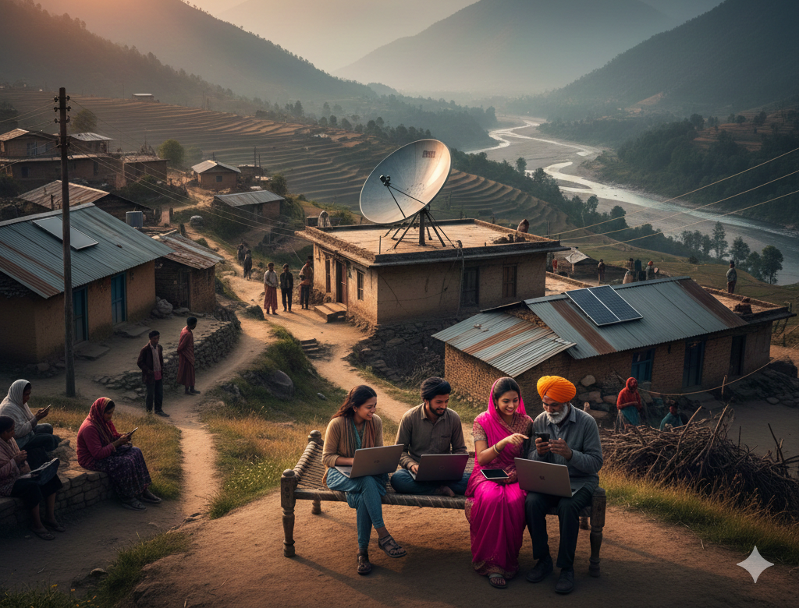
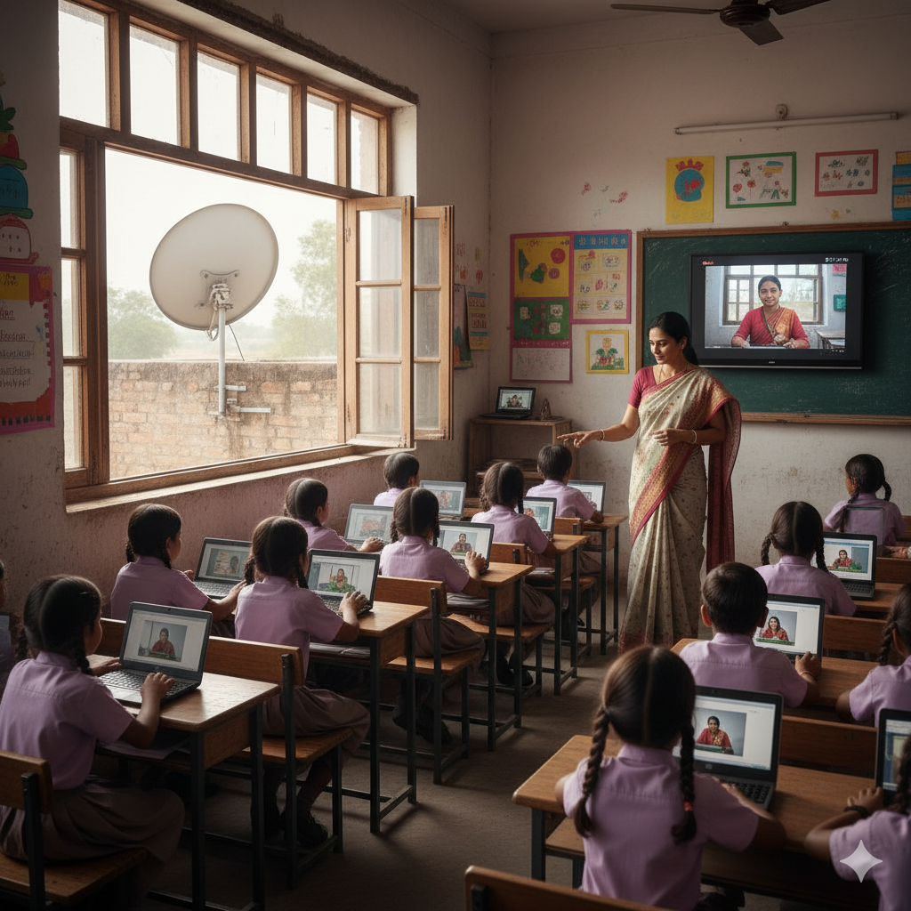
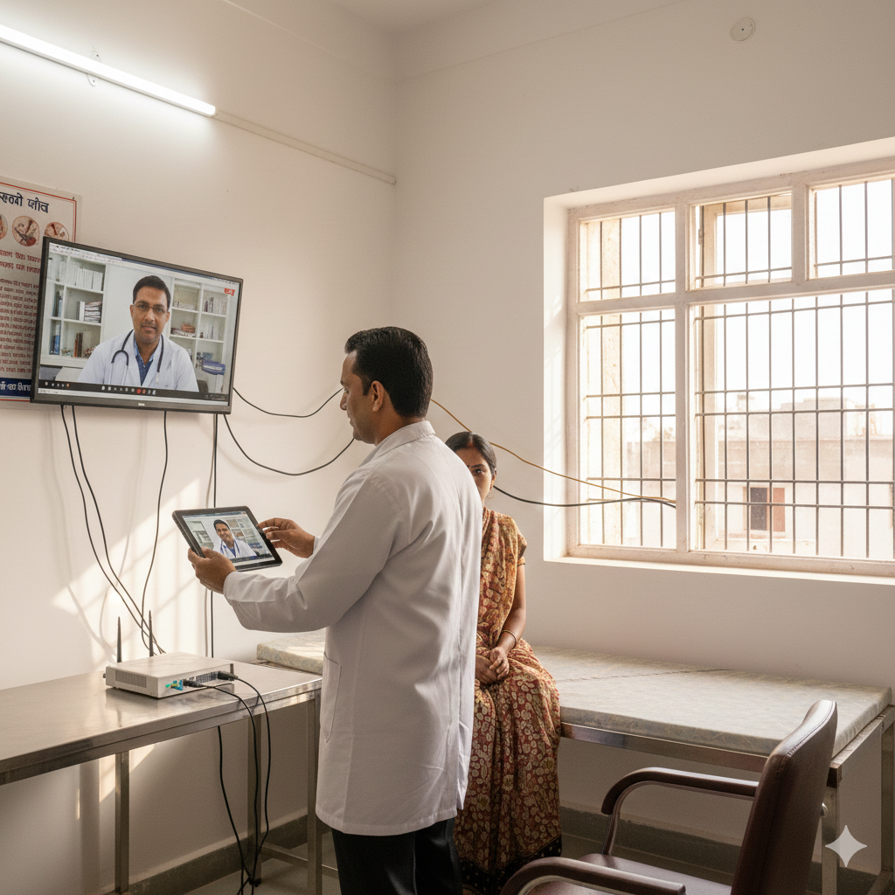
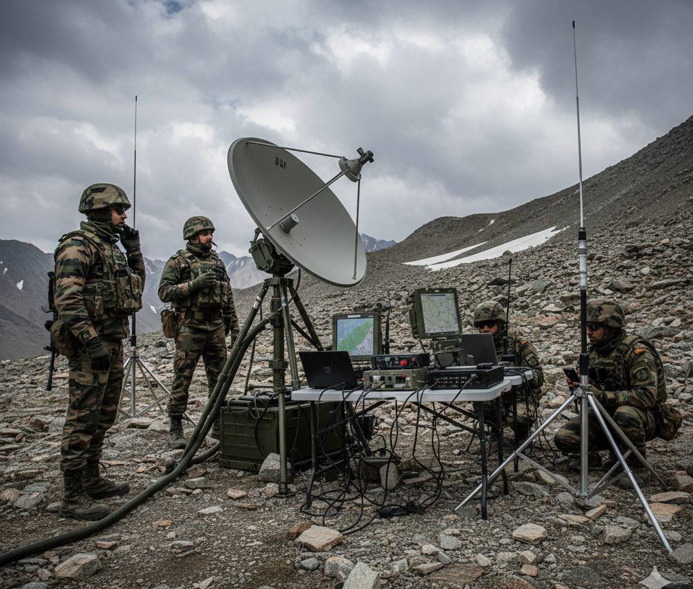
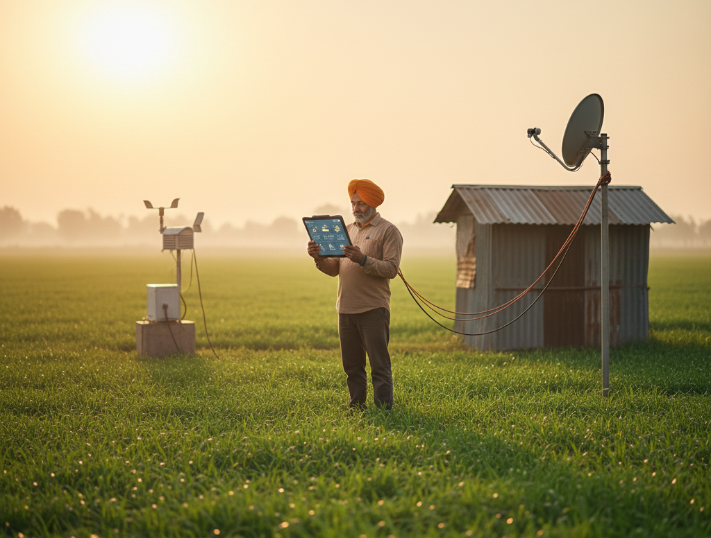
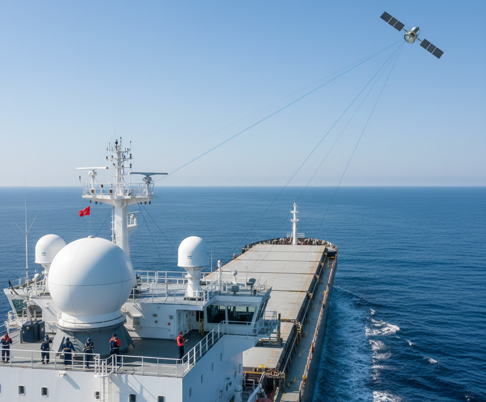

Provides internet access to villages, hills, forests, and islands where fiber and mobile networks are unavailable.

Enables online classes, digital learning, and smart classrooms for students in remote schools.

Supports telemedicine, online consultations, and emergency healthcare services in rural regions.

Used by defense forces and disaster relief teams when ground communication networks fail.

Helps farmers access weather updates, crop monitoring, and market prices in real time.

Provides connectivity on ships, aircraft, trains, and remote construction or mining sites.
Understanding the strengths and challenges of satellite internet technology
Why satellite internet is important for connectivity in India
Challenges that affect performance and cost